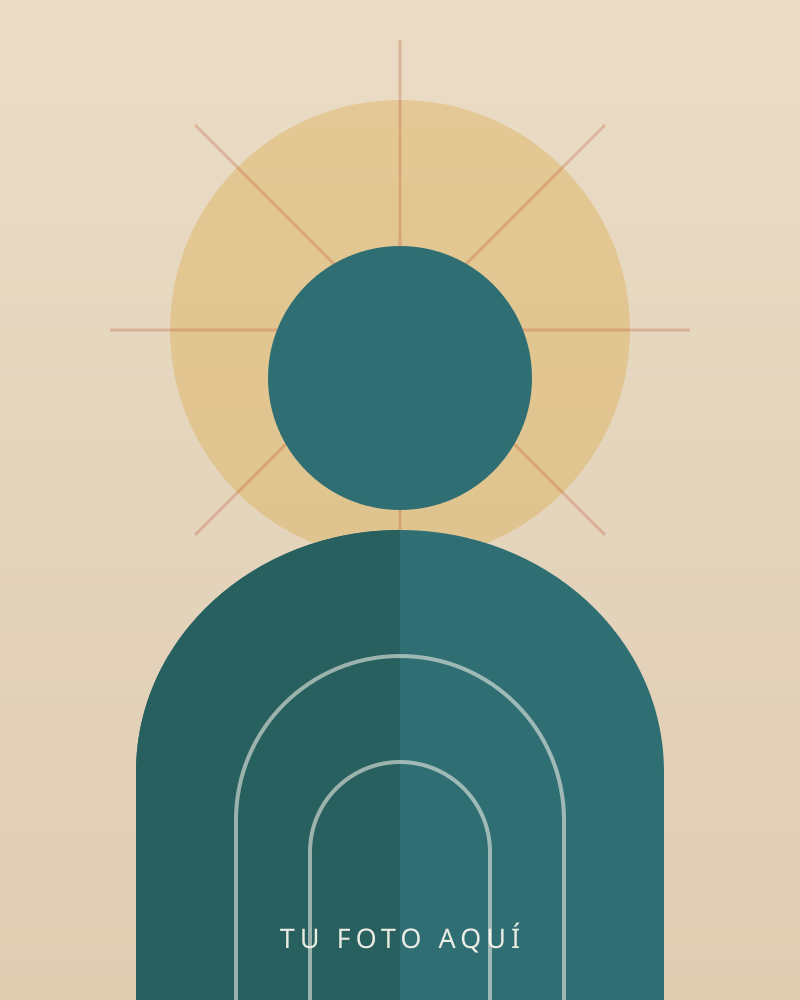

Metapericiales y análisis técnicos
Revisión técnica de un dictamen ya emitido, para valorar su método y sus conclusiones.
Dos trabajos distintos, con límites éticos distintos. Aquí puedes ver cuál de los dos es el que estás buscando.
Cédula profesional 14661976 Consejo de Psicología Forense 25-08-63 Santiago de Querétaro

Soy psicóloga con formación y experiencia profesional en los ámbitos clínico y forense. Dentro del área forense trabajo principalmente en materia familiar, lo que me ha permitido comprender las distintas situaciones y necesidades que pueden presentarse en las familias. En el área clínica, mi práctica está dedicada exclusivamente al acompañamiento de adolescentes y juventudes.
Elegí trabajar con esta población porque considero que la adolescencia es un momento decisivo en la construcción de las personas adultas del futuro. Acompañarlos oportunamente puede generar cambios importantes en el presente, mientras desarrollan su identidad y su propia manera de relacionarse con el mundo.
Mi experiencia clínica me permite crear espacios de crecimiento, cuestionamiento y desarrollo personal. Por su parte, mi formación forense me ha enseñado a comprender a cada persona dentro de un contexto más amplio. Aunque ambos ámbitos tienen objetivos y límites éticos diferentes, juntos enriquecen mi manera de comprender el comportamiento humano.
Disfruto estudiar y mantenerme en constante actualización. Procuro que mi trabajo se sustente en evidencia científica, pero también creo que la terapia puede ser cercana y creativa: disfruto crear materiales y adaptar actividades y herramientas a la personalidad, los intereses y las necesidades de cada adolescente.
Trabajo con abogados, juzgados y particulares. Estos son los supuestos en los que puedo intervenir.
Revisión técnica de un dictamen ya emitido, para valorar su método y sus conclusiones.
Cuéntame el asunto y la fecha límite, y te devuelvo el alcance y el costo.
Consulta para adolescentes y juventudes. Si lo que te pasa no está en la lista, escríbeme igual.
Creo que la terapia puede ser cercana y creativa.
Dos recorridos en paralelo, uno por cada área en la que trabajo.
Toca el mapa para moverlo, o abre la ruta directo en tu aplicación.
Cuéntame qué necesitas y te digo si puedo ayudarte. Si es un asunto legal, pídeme una cotización; si es para consulta, agendamos.